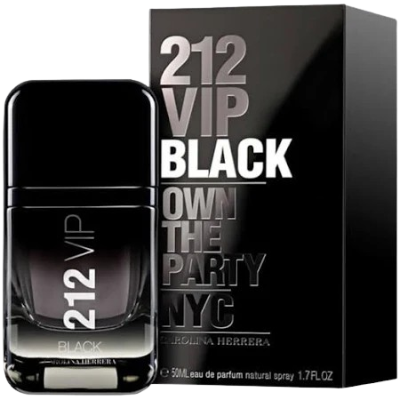
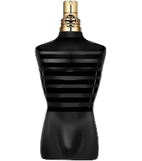

Perfume Importados
Origem
Os perfumes importados como conhecemos hoje têm origem principalmente na Europa, especialmente na França, que se tornou o berço da perfumaria moderna a partir do século XVII. A cidade de Grasse, no sul da França, ficou famosa por cultivar flores como jasmim, lavanda e rosa, usadas na produção de essências finas. Com o tempo, a França passou a ser reconhecida mundialmente pela qualidade e sofisticação de suas fragrâncias. Outros países europeus também contribuíram para o desenvolvimento da perfumaria, como a Itália, que teve papel importante no início do uso de fragrâncias alcoólicas, e a Inglaterra, onde o perfume se popularizou entre a nobreza. Hoje, marcas francesas, italianas e até americanas dominam o mercado global de perfumes importados, combinando tradição, tecnologia e arte para criar fragrâncias exclusivas.
Perfumes

212 Vip
O 212 VIP é um perfume importado da marca Carolina Herrera, lançado em 2010, inspirado no estilo de vida sofisticado, moderno e exclusivo da juventude de Nova York. O número “212” representa o código telefônico de Manhattan, símbolo de elegância, festas e glamour — e o nome “VIP” destaca a ideia de pessoas únicas, confiantes e cheias de atitude. A fragrância foi criada para quem gosta de se destacar. É envolvente e marcante, com notas que misturam rum e maracujá no topo, almíscar e gardênia no coração, e um toque de baunilha e fava tonka no fundo. Essa combinação dá ao perfume um aroma sensual, energético e ao mesmo tempo sofisticado.
R$ 699,90
Jean Paul
Os perfumes Jean Paul Gaultier são conhecidos por misturar sensualidade, arte e rebeldia. Cada fragrância é uma expressão de identidade — feita para pessoas confiantes, que gostam de se destacar. Além disso, a marca valoriza o design artístico dos frascos, que são verdadeiras obras de arte e se tornaram ícones da perfumaria internacional.
R$ 1.099